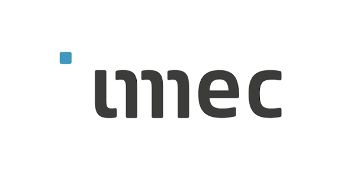

AI Hardware
Hardware architectures and memory systems for efficient artificial-intelligence computing.
Ph.D. Researcher in Electrical and Computer Engineering
Georgia Institute of Technology
AI Hardware · Emerging Memory · 3D Integration · Advanced Packaging
I am a Ph.D. researcher at Georgia Tech working on emerging memory, AI hardware, three-dimensional integration, and advanced packaging. My research explores the co-design of devices, circuits, architectures, packaging, and multiphysics systems for next-generation computing technologies.
Hardware architectures and memory systems for efficient artificial-intelligence computing.
Device-to-system evaluation of emerging nonvolatile memory technologies.
Advanced packaging, heterogeneous integration, and multiphysics co-design for future computing systems.
Academic Background
Interdisciplinary training across materials science, semiconductor technology, and electrical and computer engineering.
Ph.D. in Electrical and Computer Engineering
Research in AI hardware, emerging memory, 3D integration, advanced packaging, and multiphysics co-design.
M.S. in Semiconductor Technology
Research in three-dimensional integration and advanced packaging technologies.
B.S. in Materials Science and Engineering
Foundation in semiconductor materials, processing, characterization, and electronic materials.
Industry and Research
Experience across semiconductor research, hardware engineering, telecommunications, and international collaboration.
5G Elite Trainee
International telecommunications training and project experience across multiple East Asian markets.

Research and Development Intern
Semiconductor research experience in an international research and innovation environment.
Hardware Engineering Intern
Hardware engineering experience related to semiconductor technologies and system development.